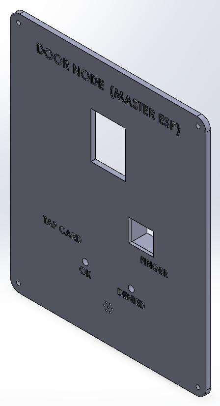
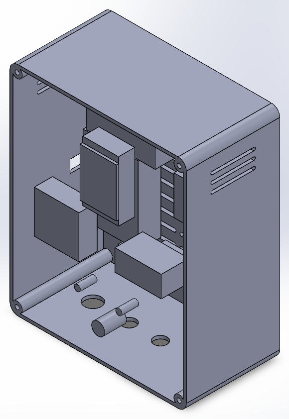
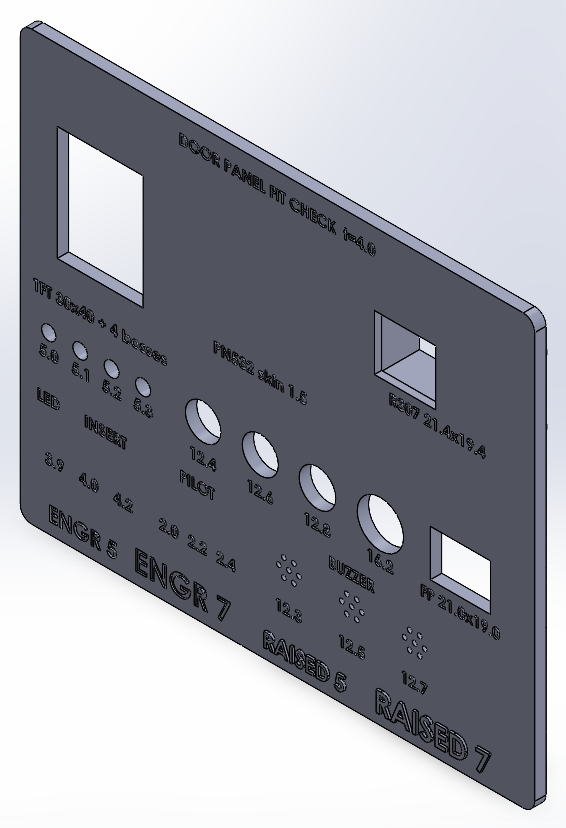
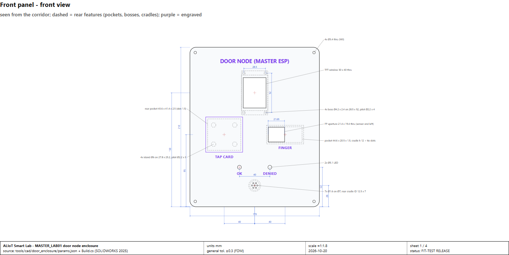
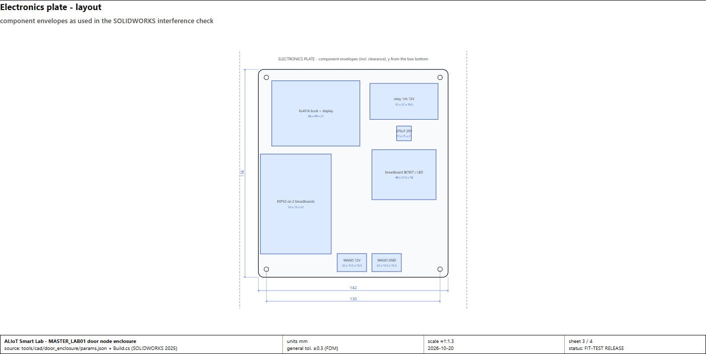

Version 2026-10-20 evening update (the morning 2026-10-20 and the 2026-10-18 dossiers stay as history).
Branch offline-router-door-photos, committed as b8c5bdb, not pushed. Deployed portal version
f5eaeff-dirty-20261020021246 (nothing redeployed since - only CAD and docs changed). Database migration head
b7c3e1f9a204. Labels:
LIVE-VERIFIED seen working on the real system,
TESTED OFFLINE automated tests only,
SIMULATED,
PHYSICAL VALIDATION REQUIRED,
BLOCKED / OWNER INPUT.
New in this update (section 0): the master-door enclosure fit-test release (datasheet research,
SOLIDWORKS model, interference check, drawings), the Face-ID photo self-service, the camera-first GPU gate, the
FANUC / UR5e welcome view, the AI CPU-vs-GPU measurement and the evening test run. The speaker / PAM8403 was
removed by the owner and is gone from the wiring record.
0. This update (2026-10-20 afternoon / evening)
Area
What was done
Status
Door node enclosure
Every opening re-based on sourced dimensions (4 research passes over Most Electronics, Ekostra and the manufacturers' datasheets; report reports/Door enclosure component dimensions.md). New mounts: TFT on its 4 PCB holes, PN532 on islands behind a 1.5 mm skin, R307 in a cradle with a cable tie (it has no flange), active-buzzer cradle with sound holes, PG7 / M16 gland holes. The 180 x 150 mm fit coupon tests every one.
VERIFIED IN CADFIT-TEST PRINT REQUIRED
Virtual assembly
Body + front panel + plate + 14 component envelopes (outline + clearance). SOLIDWORKS interference detection: no interferences (17 bodies). The first run found the ESP32 overlapping a lever connector by 0.25 mm and a square buzzer envelope inside its round cradle - both fixed. 25 mm wire space between the plate modules and the front modules.
Title "DOOR NODE (MASTER ESP)" and placement labels engraved 0.6 mm, panel printed front-down (smoothest face; raised text is printed next to it on the coupon for comparison). Bug found and fixed: SOLIDWORKS sketch text is left-aligned, so the title ran off the panel edge - every text is now measured and centred.
VERIFIED IN CAD
Face-ID photo self-service
Users send photos (file or selfie); the portal checks them with the face server (no face / someone else's face refused); staff approve (trains), ask to retake, or refuse ("see the lab staff"); notifications both ways.
LIVE deployed; 16 backend tests
Camera-first GPU gate
One decision for both assistants: any camera live or unknown -> CPU at once; GPU only after 120 s idle, at most once per 300 s, with free GPU memory. Opt-in (default unchanged).
TESTED OFFLINE 9 + 5 tests
Welcome view
FANUC cell turned so its real front faces the viewer; UR5e starts at an easier home pose.
LIVE
Enclosure - renders and drawings

front panel

inside (panel hidden) with component envelopes

fit coupon - print first


Enclosure - where each opening comes from
Part (seller)
Key dimensions used
Confidence
R307 fingerprint (Most ME-30297)
44.1 x 20 x 23.5, head face 19 x 21, sensing window 15 x 11.19, no flange (GROW manual p.2)
DATASHEET (no tolerances published)
1.8" ST7735 TFT, red V1.1 (Most ME-38699)
PCB 34.5 x 58, holes D3.2 on 28.5 x 52 (LCDWIKI MSP1803); glass 34.7 x 46.7 x 2.4, active area 28.03 x 35.04 (QDTFT1801)
VARIANT + DATASHEET
PN532 V3 red (Ekostra EK506)
42.7 x 40.4 x 4; 2 holes D3.05 on 27.8 x 25.2 (Elechouse V4 STEP, "same holes as V3")
Full register: docs/hardware/DOOR_ENCLOSURE.md. Verdict: ready for the fit-test print, not yet for the final box - most hole patterns are vendor / reference data, not measured on the owner's parts; the coupon checks them all in one ~97 cm³ print.
AI assistants: CPU vs GPU, cameras idle MEASURED
qwen2.5:1.5b, 120-token answers, n = 6 each
Answer (median)
Generation
GPU memory
CPU (current setting)
2.4 s
22 tokens/s
0 MB
GPU
1.3 s
68 tokens/s
1062 MB
CPU again (left as found)
2.6 s
20 tokens/s
0 MB
Both camera services were up with no stream (0 analyses/s). Short answers are quick on the CPU too; the
51 s CPU figure in section 2 is a long answer with document context. The GPU generates ~3x faster - worth it only while the cameras are idle, which is what the opt-in GPU gate does. tools/benchmarks/ai_cpu_gpu_ab.py.
State while the morning sections (1-7) were written: the laptop was off the lab network (phone hotspot). Both camera
services run the new code but have no stream; no ESP node, robot or camera could be tested live after 19:15 on
2026-10-19. Portal changes were deployed and verified on the live portal; tracking changes are tested offline only.
1. What changed in this round
Area
Root cause (evidence)
Fix
Status
USER1 / USER5 cross-camera conflict
Camera 1's desk rule named whoever sat at PC-09/PC-10 "USER5" from a door entry hours old; camera 2's face said USER1. 4 episodes (16:14, 16:15, 17:02, 18:36), 243 conflict lines, 546 of 547 USER5 namings came from the desk.
The desk only continues evidence: name on a track within 120 s, or door / face / other camera within 10 min. Otherwise DESK_NOT_USED.
TESTED OFFLINE regression test fails on the old code
Seated-person flicker
The labeler saw only tracks detected in the last 0.6 s while the tracker keeps a still track 6 s: every short miss logged NAME_LOST and let the desk name a second track (NAME_ON_TWO_PEOPLE x24).
Tracks still kept by the tracker ("coasting") keep their names and are not reported lost; hand-back counts from last-seen time.
TESTED OFFLINE
Nour Unknown after a short track break
Hand-back looked only at the spot where the track was lost; a walking person reappears further along.
Search along the walking path (look must still agree).
LIVE-VERIFIED 19:05 walk test
Wrong name after a crossing (camera 2, 19:05)
Nour's name, correctly handed over, stayed on camera 2's track after it went onto Ali; camera 2's own face said USER1; by design the name was not switched.
A name only carried over (other camera, desk) gives way to this camera's 2 agreeing face matches when nobody touches. Door names keep the mismatch flag. Face thresholds unchanged.
TESTED OFFLINE
FANUC Educational Cell
Drawn from overall dimensions only; panels 12 % opaque; yellow panel on the wrong face; no lettering; cell front opposite the owner's real front.
Glass with edges, two doors, hinges, knob, FANUC sticker, yellow side panels ("Learn online: fanuc.eu/educational-package"), controller with e-stop, pendant, crate, slotted table, parts plate, "FANUC Robot ER-4iA" on the forearm; robot right of the plate, front = owner's front.
LIVE-VERIFIED deployed, screenshots
Robot mesh size
UR5e meshes were unindexed (each position stored ~5.6 times); the 2026-10-19 "12.5 MB -> 75 KB" counted only the index files.
Structured answers 0.0-0.2 s; document lookup 1.6 s; an answer from the language model (qwen2.5:1.5b on the
CPU, cameras idle) 51.5 s. CPU is the owner's choice (GPU for the cameras; GPU answers were ~3 s on 2026-10-19).
Cross-camera evidence (camera logs 2026-10-19)
Measure
Value
Appearance distance, same person (both names confirmed)
n = 119, median 0.30, p90 0.44, max 0.73
Appearance distance, different people
n = 2 (0.67, 0.70) - the earlier 0.28 / 0.38 pairs used the wrong desk name and are excluded
Floor gap, same person in both cameras
median 0.41 m, p90 0.86 m (pairing gate 0.7 m)
Floor coverage from the two floor maps
both cameras: middle of the room (y ~3.5-8 m); camera 1 only: far end; camera 2 only: near end; neither ~1 % (occlusion not modelled)
Handover at entry (19:04 walk test)
camera 1 named at the door, camera 2 had the name 4 s later; longest Unknown on camera 2: 35 s after a track break where only camera 2 saw the person
Simulated scenario bench (14 scenarios)
no false names, no name switches - identical to 2026-10-18 SIMULATED
Conclusion: appearance matching stays observe-only - not because it is shown unreliable, but because only 2
different-person pairs exist. The blind-spot Unknown time is track breaks in camera 2's own area, not unseen floor.
3. Tests
Suite
Result
Backend (pytest, smartlab_test)
554 passed (8 min 18 s, evening run; 542 in the morning)
Security cameras
253 passed (11 new regression tests; evening re-run 253)
Robot monitor / knowledge / PC agent
41 / 49 / 5 passed (evening run)
Frontend
TypeScript clean; production build OK (evening re-run)
camera recording e2e (cameras offline); student-role checks on live (real account, not the demo password)
Six e2e scripts were updated for UI changes made since they were written (sign-in now lands on /welcome; booking wizard has an Equipment step; lab count read from the database).
4. Devices
Device
State
Door master, environment node, consumables bin, reusable bin, PC agent
last report 2026-10-19 03:59-04:29 local; none reported during the 2026-10-19 lab session although the cameras on the same network did PHYSICAL CHECK
ESP32-CAM + face server
face server up (SFace, threshold 0.363); templates USER1, 2, 3, 5, 6, 7 - Hemaly (USER5) is loaded (23 samples); live door test needs her present PHYSICAL
Robots (UR5e, FANUC)
collectors running read-only, no data off the lab network; DRY RUN, nothing sent
Cameras
services healthy, reconnecting; 7 fps each when live (2026-10-19)
5. Remaining - owner actions
#
Item
Type
1
Walk tests at the lab (one person, then two crossing) to confirm the tracking fixes live; record a 2-person session for appearance thresholds
PHYSICAL
2
Only if the walk shows long camera-2-only stretches: tilt camera 2 and re-click the tape marks (back up the floor JSON first)
PHYSICAL
3
PC letter -> number mapping for camera 2 (B, C, D, F, G, I, J, K, L -> PC-01..11)
OWNER INPUT
4
Hemaly at the door: positive + negative face test
PHYSICAL
5
Why the ESP nodes stopped reporting at 04:00 (power, Wi-Fi, portal address)
PHYSICAL
6
Print the enclosure fit coupon (same material as the panel, front down) and try the real TFT, PN532 (a card must read through 1.5 mm), R307, LEDs, buzzer, inserts, glands; measure the R307 length (44.1 or ~52 mm) and the breadboard height (8.5 or 10 mm)
PHYSICAL
7
Buy 3 x PG7 + 1 x M16 cable glands with locknuts (Most Electronics has none)
OWNER
8
Door wiring values not recorded (section 6) - measure
PHYSICAL
9
Full 3-run before/after benchmark of every sidebar entry: needs E2E_PASSWORD set in the environment (the tooling refuses a password typed on the command line)
OWNER
10
Decide whether to switch the assistants to the GPU gate (auto) - numbers in section 0
OWNER
6. Appendix - door master (MASTER_LAB01) wiring as recorded
From the firmware constants and the 2026-10-04/05 bring-up log; full version with parts table:
docs/hardware/DOOR_MASTER_WIRING.md. "Not recorded" = measure before use; nothing was guessed.
ESP32 GPIO
Connected to
Notes
19 / 18
PN532 V3 (HW-147) SDA / SCL
I2C 0x24, S1 ON / S2 OFF, IRQ + RESET not wired; supply pin not recorded
13 / 2
ST7735 1.8" TFT SCK / MOSI
own SPI bus; GPIO2 is a boot strapping pin
25 / 32 / 33
ST7735 CS / DC / RST
VCC and backlight supply not recorded
16 / 17
fingerprint TX -> ESP RX16; ESP TX17 -> sensor RX
AS608-protocol, 57600 8N1; model and supply not recorded
27
MC-38 reed switch to GND
INPUT_PULLUP: LOW closed, HIGH open
26
BC557 base via 3.3 kΩ
HIGH = locked, LOW = unlocked
14
green LED
resistor not recorded
21
NPN stage: red LED + buzzer
transistor and resistors not recorded; 600 ms denial beep
15
red LED via 220 Ω to GND
own pin, no buzzer current
22
nothing now (was 3.3 kΩ -> PAM8403)
speaker + PAM8403 removed (owner, 2026-10-20) - the tablet page plays the sounds
+12 V -- relay VCC, relay COM, 470 uF 25 V (+) ; (-) -- GND
relay NO -- solenoid (+) ; solenoid (-) -- GND (lock on NO = fail-secure)
3V3 -- BC557 E ; BC557 C -- relay IN ; BC557 B -- 3.3 k -- GPIO26 ; 15 k between B and E
GPIO26 HIGH -> PNP off -> coil off -> locked. LOW -> ~1 mA base -> coil on -> unlocked.
Measured: COM-GND 12.1 V at rest, 12.03 -> 11.95 V during an unlock.
Supply: 12 V / 10 A PSU -> master switch -> WAGO -> fused branch -> buck -> 5 V -> ESP32 VIN (door buck model not recorded).
Records disagree: door_audio.h says RC ~47 µs, but 3.3 kΩ x 100 nF = 330 µs; docs/DOOR_SYSTEM.md pin table still shows the retired MFRC522 and the lock on NC.